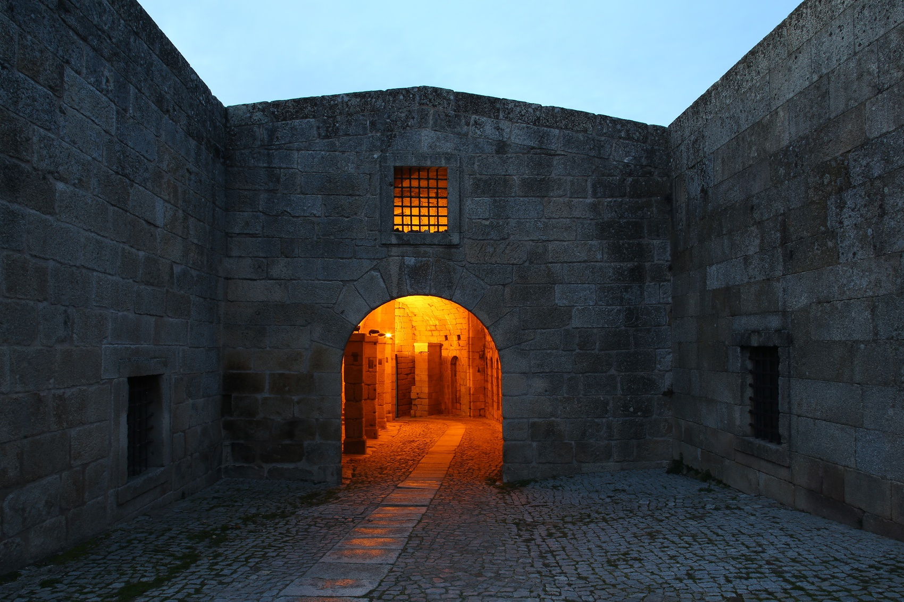
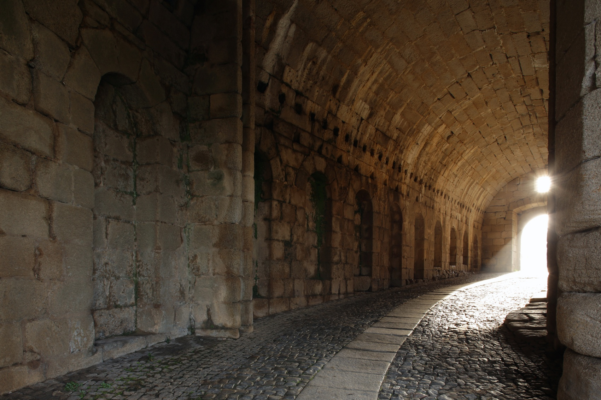
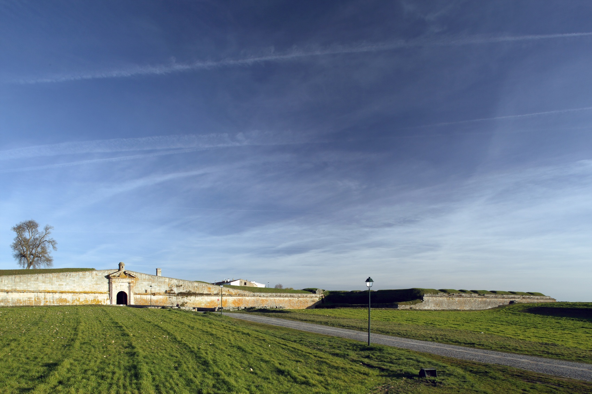

Almeida
Sobre
Almeida é uma vila fortificada de grande relevância histórica, marcada pela sua imponente fortaleza abaluartada em forma de estrela, construída nos séculos XVII e XVIII. Teve um papel fundamental nas guerras com Espanha, especialmente durante as Invasões Francesas.
Para além das muralhas, destacam-se o Museu Militar, a antiga praça-forte e o traçado urbano regular, que fazem de Almeida um destino privilegiado para quem aprecia história militar e património bem conservado.

História

Almeida terá tido origem na migração dos habitantes de um castro lusitano, localizado a Norte do lugar do Enxido da Sarça, ocupado em 61 a.C. pelos Romanos, e depois pelos povos bárbaros. Dada a sua situação em planalto, os Árabes chamaram-na Al-Mêda (a Mesa), Talmeyda ou Almeydan, tendo construído um pequeno Castelo (séc. VIII- IX). No período da Reconquista, os Cristãos tomaram-na definitivamente em 1190 e foi sucessivamente disputada a Leão, passando à posse portuguesa com o Tratado de Alcanizes em 1297.

Recebeu foral de D. Dinis (1296), que reconstruiu o Castelo, e foral novo de D. Manuel (1510). Junto ao Castelo de planta retangular e quatro torres circulares, cresceu o núcleo medieval limitado pelas muralhas, cujo vestígio se vê na Porta do Sol, traçado que a Rua dos Combatentes acompanha e que define o velho burgo. No Castelo havia a primitiva Igreja Matriz.
A explosão do Revelim do Paiol, em 1810, motivada pelas invasões francesas, arrasou grande parte da vila, sendo esta igreja transferida para a do Convento de N. Sra. do Loreto - que apresenta um portal barroco - tomando o nome de N. Sra. das Candeias, cuja procissão se realiza a 2 de Fevereiro. A religiosidade popular está também assinalada nos passos da via-sacra.

A importância desta praça defensiva levou à expansão urbana e institucional sendo dignos de nota os edifícios do antigo Quartel de Artilharia, Vedoria, Tribunal, bem como a Igreja e Hospital da Misericórdia, de portal clórico - exemplos da arquitetura seiscentista.
A sua qualidade de praça-forte marcou também o próprio urbanismo, com quarteirões destinados a alojar os militares, como o caso do antigo quartel de Cavalaria. De realçar, o Quartel das Esquadras, edificado em 1762/69 (em frente do qual se fazia a parada militar, zona hoje ajardinada), e a célebre Casa da Roda - instituição criada por Pina Manique em 1783, para recolhimento das crianças expostas. No lugar da Roda encontra-se uma janela.
O que ver